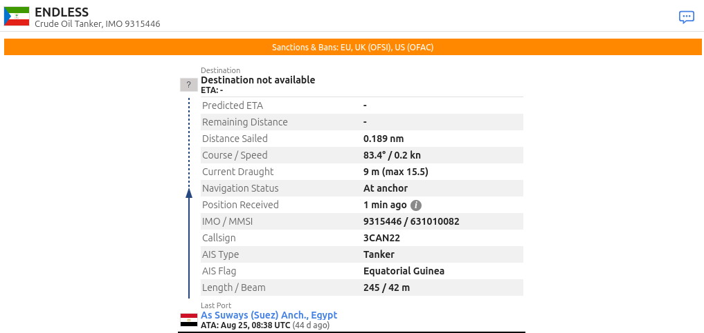
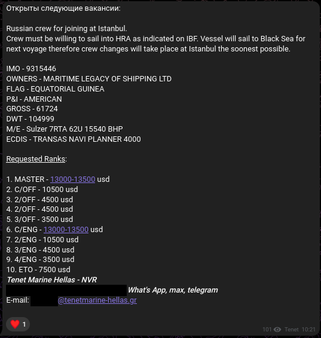
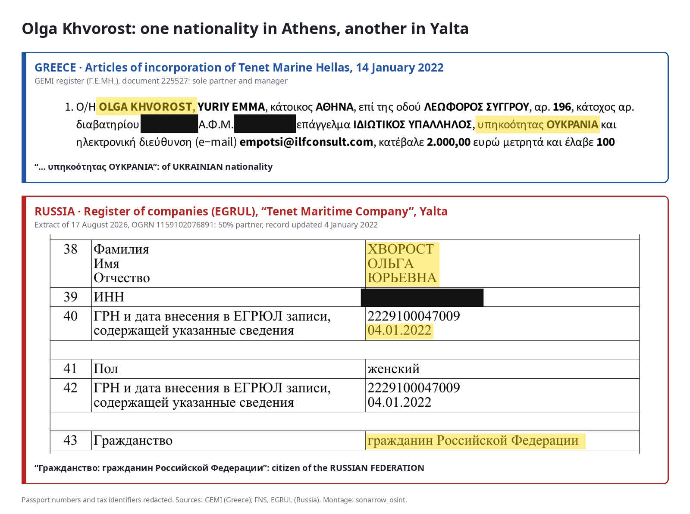
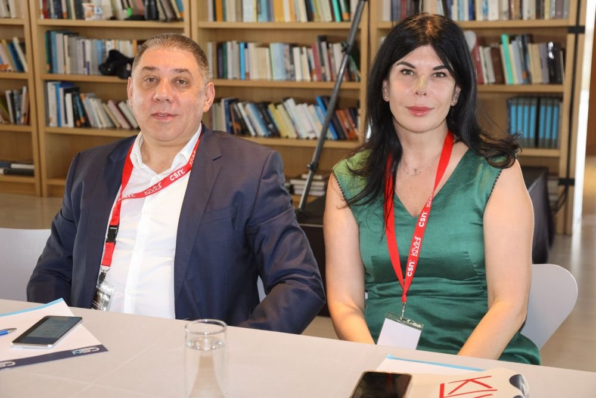

On 26 August 2026, on Sea_Anchorage, a Telegram channel where maritime agencies post their vacancies, an office in Novorossiysk is looking for a full crew for a tanker. Ten positions, from master to electrician. First requirement: a “Russian crew”. Second requirement: agreeing to sail into a “high-risk area”, as the vessel “will sail to the Black Sea” (ad).
The ad does not name the vessel but gives an IMO number, the international ship identifier, matching that of the ENDLESS (IMO 9315446), formerly SPRING, a tanker on the European Union’s blacklist since 21 May 2025 (Regulation (EU) 833/2014, Annex XLII). The day before, it had dropped anchor off Suez (VesselFinder).

The ad is signed “Tenet Marine Hellas – NVR”, NVR standing for Novorossiysk. This is a Greek company, even though European law prohibits any company in the Union from supplying crews to vessels of Russia’s “shadow fleet”.

The term refers to tankers with opaque ownership that carry Russian oil in spite of Western sanctions. On 23 July, the European Union sanctioned maritime recruitment agencies for the first time, among them Aquamarine Ship Management, also based in Novorossiysk (Official Journal of the EU). A week earlier, The Insider had counted more than a thousand job ads for the shadow fleet on Telegram and described these agencies as the forgotten link in the sanctions (The Insider). Our team has identified the people hiding behind this kind of illegal recruitment.
Tenet’s role
Timeline of the ads for six sanctioned tankers in five months
The ENDLESS is not an isolated case. From April to September 2026, the Novorossiysk office posts vacancies for six sanctioned tankers. Four are on the European blacklist; the other two, the IN (IMO 9235892) and the ACERS (IMO 9301902), appear on the Ukrainian list only under their former names, WIND and CERS. None of the ads mentions the sanctions; they merely give the vessel’s name or its IMO number.
The first vacancy dates from 20 April, on “Maritime Zone”, a website dedicated to maritime job offers (ad). Tenet is then looking for a chief officer of Russian nationality for the BLUE (IMO 9236353), a 165,000-tonne tanker added to the European list eleven months earlier.
On 28 July, five days after Aquamarine was sanctioned, the same site publishes, under Tenet’s logo, a vacancy for a chief engineer on the SUN (IMO 9293117) (ad). Here again, candidates must be of Russian nationality only.
In mid-August, the vacancies start appearing on Telegram. The SUN comes up three times: a chief engineer to join at Suez, then a chief officer and a fitter to join at Ust-Luga, Russia’s major oil terminal on the Baltic (19 August, 20 August, 3 September).
On 19 August, another ad seeks a chief engineer for a “109,000-tonne crude oil tanker”, without naming it (ad). We identified it as the TSITRIN (IMO 9437983), which had been berthed two weeks earlier at Primorsk, another Russian oil terminal (see the Methodology box).
The vacancy for the ENDLESS is posted a week later.
The sanctioned tankers in Tenet’s ads (2026)
| Vessel (IMO) | Former names | Sanctions | “Tenet Marine Hellas – NVR” ads |
|---|---|---|---|
| BLUE (9236353) | — | EU 21/05/2025; UK 09/05/2025; Ukraine | 20/04/2026 |
| SUN (9293117) | — | EU 21/05/2025; UK 21/07/2025; Ukraine, Switzerland, Canada | 28/07*, 19/08, 20/08 and 03/09/2026 |
| TSITRIN (9437983) | OCEAN PRINCE, NAN HAI, CAI YUN | EU 21/05/2025; UK 09/05/2025; Ukraine, Switzerland, Canada | 19/08/2026** |
| ENDLESS (9315446) | SPRING, MUM | EU 21/05/2025; UK 21/07/2025; United States; Ukraine, Canada | 26/08/2026 |
| IN (9235892) | WIND | Ukraine | 14/08/2026 |
| ACERS (9301902) | CERS | Ukraine | 21/08/2026 |
* Ad published under Tenet’s logo, unsigned. ** Vessel identified by its characteristics; the ad does not name it.
An activity that began before the sanctions
CVs published on the “Crewdata” website show seafarers stating that they joined, through Tenet, between 2022 and 2024, four tankers since sanctioned by London or Brussels. On one of them, the FOTUO (IMO 9293959), two second engineers follow one another in the same post. The first was recruited by the group’s office in Simferopol, in Crimea, the second by its Odesa office.
The tankers on which seafarers say they were placed by Tenet before the sanctions (CVs published on Crewdata)
| Vessel when joined → current name (IMO) | Declared periods on board | Subsequent sanctions |
|---|---|---|
| RAPTOR → CHENG HE (9304629) | 12/2022 – 08/2023 | UK 17/06/2025; EU 24/10/2025 |
| PANTHER I → BULL → TORERO M (9292503) | 06/2023 – 11/2023 | UK 17/12/2024; EU 25/02/2025 |
| FOTUO → DUOS (9293959) | 12/2023 – 06/2024 (two successive seafarers) | UK 09/05/2025; EU 21/05/2025 |
| SELIGER → ASTERAS (9402263) | 11/2023 – 08/2024 | UK 06/08/2026 |
A shop window in Piraeus
Tenet Marine Hellas does exist in Greece’s business register (GEMI register): incorporated on 14 January 2022 with €2,000 in capital, it was first registered at a business-domiciliation centre in Athens, then at an address in Piraeus. From 2022 to 2024, it declared neither employees nor turnover.
Since May 2026, the forty ads posted by the Novorossiysk office on the “Sea_Anchorage” channel all follow the same template: a header in Russian, a Russian phone number, the signature “Tenet Marine Hellas – NVR”. Apart from the word “Hellas”, only the domain of the email addresses, @tenetmarine-hellas.gr, points to Greece.
In the Maritime-Union directory, Tenet Marine Hellas, at its Piraeus head-office address, itself lists Novorossiysk as one of its branches, alongside Nicosia and Odesa (Maritime-Union listing). On the Maritime Zone job platform, its profile gives tenetmarine-hellas.gr as its website (Maritime Zone profile). Yet no website exists at that address, only a hosting provider’s placeholder page. The domain is therefore used only for the recruiters’ email addresses.
It would therefore appear that Tenet’s positioning as a Greek company is merely a shop window meant to deflect suspicion about its ties to Russia.
Recruiting for sanctioned vessels: a criminal offence in Greece
As shown above, the ads show that Tenet Marine Hellas was seeking to crew vessels on the European blacklist, which Regulation 833/2014 prohibits (Article 3s(1)(d)). Indeed, since 2025, Greece has made breaching European sanctions a criminal offence: directors face prison, and the company a fine of up to €40 million (Law 5232/2025). Tenet Marine Hellas nevertheless appears on no sanctions list.
Who is behind Tenet?
Two partners
The group says it has been recruiting seafarers since 1993. Yet the group’s original company, the “Tenet Maritime Company”, was only registered in Odesa in July 2010 (Ukrainian register, via YouControl). Since then, two names have recurred from one register to the next, together or separately.
The first, Andrii Dukhno, heads the group. Director of the Odesa company since its creation, he holds 60% of it, and has also run the Yalta company since 2016. The second, Olga Khvorost, is his partner in Odesa, with a 40% stake. She is the one who carries the Greek company, of which she is the sole partner and manager.
In 2014, Russia annexes Crimea, but the group stays in the region. It keeps an office in Yalta. Another office, in Simferopol, presents itself as “Tenet Marine Company Ltd, Russia”: postcode, phone numbers and website are Russian. From September 2015, this office posts job ads under the same licence number as the Odesa company. In the meantime, on 21 March 2015, Andrii Dukhno and Olga Khvorost had set up in Yalta a company under Russian law, also named “Tenet Maritime Company”, which they own in equal shares.
A few years later, in March 2019, the group enters the European Union with Tenet Marine Kypros, of which Andrii Dukhno was a director (Cypriot register, via OpenCorporates). It is the only company in the group where the trail goes cold: its shares were transferred and its directors changed in January 2025, and we have not been able to establish to whose benefit.
In January 2022, six weeks before the invasion of Ukraine, Tenet Marine Hellas is set up in Greece.
![Diagram of the Tenet group. Olga Khvorost holds 100% of Tenet Marine Hellas (Greece, founded 14/01/2022), 40% of the Tenet Maritime Company in Odesa and 50% of the Yalta company. Andrii Dukhno holds 60% of the Odesa company, which he directs, 50% of the Yalta company, which he directs, and was a director of Tenet Marine Kypros (Cyprus). The Simferopol office, “Tenet Marine Company Ltd, Russia”, uses the same licence as the Odesa company. The Novorossiysk office, “Tenet Marine Hellas – NVR”, is declared as a branch of the Greek company and posts vacancies for four tankers on the EU blacklist: BLUE, SUN, TSITRIN and ENDLESS.](../../assets/img/schema-groupe-tenet_en.png)
Erasing Russia
In 2021, the group’s website opened with the banner “Cyprus, Greece, Ukraine, Russia”. Its Contacts page gave the address of a representative in Novorossiysk. In spring 2022, “Russia” leaves the banner and the address disappears (archives of 21 October 2021, 8 April 2022 and 29 May 2022). Today, the site claims offices “in 3 countries”, thus leaving out Russia.
Traces remain all the same, and until 2024 the privacy policy still mentions “our office in Russia” (archive of 24 April 2024). In June 2026, the “Certificates” page still displays those of the Russian Maritime Register of Shipping, the state body that certifies vessels and maritime companies (archive of 16 June 2026).
The group thus tried to erase its ties to Russia, starting with its website, without success.
Ukrainian in Athens, Russian in Yalta
In the Greek articles of incorporation, Olga Khvorost has only one nationality: Ukrainian, backed by a Ukrainian passport. The Russian register of companies, the EGRUL, says otherwise: for the Yalta company, on the “nationality” line, it lists both partners as “citizen of the Russian Federation”. Here again, the Russian registers give away Tenet’s ties to Russia.


On 9 December 2021, Olga Khvorost takes a flight from Athens to Moscow. On 4 January 2022, the EGRUL records a new Russian identity document in her name. On 14 January, she sets up the Greek company online, declaring herself solely Ukrainian. Leaked Russian databases attribute to her 43 flights to or from Moscow between 2016 and 2023: to Athens and Larnaca until 2021, then via Istanbul.
Andrii Dukhno follows the same path. According to the same databases, he receives a Russian internal passport in June 2014. On 5 October 2022, seven months after the invasion, he obtains a Russian international passport. Seventeen days later, he flies from Sochi to Istanbul.
The forced passportisation of Crimea in 2014 may explain why he holds an internal passport, but it explains neither his international passport, which has to be applied for, nor the company set up in Yalta, since the EGRUL records it as a new incorporation, not as the re-registration of an existing company (EGRUL, OGRN 1159102076891).

No register shows the whole picture, but it is when they are cross-referenced that everything becomes clear: the Greek register sees a Ukrainian woman at the head of a company with no declared activity, while the Russian register sees two Russian partners in Crimea and the Ukrainian register sees an agency in Odesa.
Olga Khvorost and Andrii Dukhno do not hide behind nominees. They sign the articles of association, hold the shares, pose in Athens at an industry conference. What they hide is Russia: Ukrainians in Athens, Russian citizens in Yalta, they illegally recruit, from Novorossiysk, Russian crews for tankers that Europe has banned.
So, beyond the companies that run the ships, attention can turn to the firms that recruit the seafarers: no recruitment, no crew; no crew, no ships. The vessels are sanctioned, admittedly, but those chiefly at fault are the ones in charge of recruiting the seafarers. Opaque at first, the question of who is behind these recruitment agencies can be cleared up through in-depth research. Although they are often registered in Europe, clear links can be established with Russia, and with the dark fleet. This investigation therefore opens the way to many others, Tenet not being an isolated case, in order to shed light on these agents operating with complete impunity on European soil.